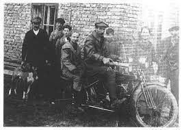

A ktm é a maior empresa em venda e produçao de motos em todo o mundo.Fundada em 1940, possui filiais em mais de 110 paises, sendo a marca lider no mercado com mais de 90% de participaçao em 100 deles!.
Adquira já seus veiculos e acessorios acessando a nossa loja web!

História
A KTM foi fundada em 1934 por Hans Trunkenpolz na cidade de Mattighofen, pequena vila Austríaca e à loja foi dado o nome de Kraftfahrzeuge Trunkenpolz Mattighofen – KTM Kraftfahrzeuge - significa veículos a motor Trunkenpolz - sobrenome do fundador Mattighofen - a cidade onde a empresa se instalou

Diferencial KTM
Cada KTM apresenta a pureza do design e no funcionamento robusto que define a mentalidade READY TO RACE. Na sua moto, olhando para frente e apenas aproveitando o momento – nada mais importa. Com a potência e a performance nas suas próprias mãos e podendo utilizá-los como bem entender, sem distração.

Sportmotorcycle AG
Sportmotorcycle AG.com